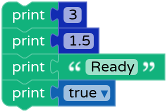

Course home · Lesson 2 · Lesson 3
Data types
Learning objective. Choose integers, floats, strings and booleans for game values.
Read the same program in two forms
Blockly

GDScript
print(3)
print(1.5)
print("Ready")
print(true)- Computer science. A type tells you what kind of value you are using. Integers are whole numbers, floats can have a decimal part, strings are text, and booleans are true or false.
- GDScript. Use
3for an integer,1.5for a float,"Ready"for a string, andtrueorfalsefor a boolean. Writevar lives: int = 3to say that lives must hold an integer. - Godot. An integer suits a count of lives, a float suits a speed, a string suits a label, and a boolean suits whether a door is open.
Predict the output
Which line does addition, and which joins text? Predict both outputs.
print(2 + 3)
print("2" + "3")Check the prediction
The first prints 5. The second prints 23 because + joins the two strings.
Guided task · Set up a player
Set lives to 4 and speed to 2.5. Keep their types and print them in the order shown.
var lives: int = 1
var speed: float = 1.0
print(lives)
print(speed)Debugging task · Repair the door state
Run the code. Change the value on line 1 to a boolean so the program prints true.
var door_open: bool = "true"
print(door_open)Show a hint
Quotes make "true" a string. The boolean is true without quotes.
Independent task · Write a player profile
Create values for a player name, lives, speed and whether they have a shield. Give each variable a type and print all four. Then change the shield value and run again.
# Create and print four typed variables.Success criteria. Your program runs and prints a name, a whole number, a decimal speed and a true-or-false value. Only the last line changes after you switch the shield.
Apply it to your project
Find one value from your game, such as the number of keys. In a scene’s _ready(), give it a type and a starting value. Print it and check that the result makes sense for the game. Godot editor setup
Optional extension
In your browser program, try assigning a name in quotes to the lives variable. Read the error and restore an integer.
Reflection
Why might 3 and "3" look the same in Output but behave differently in an expression?